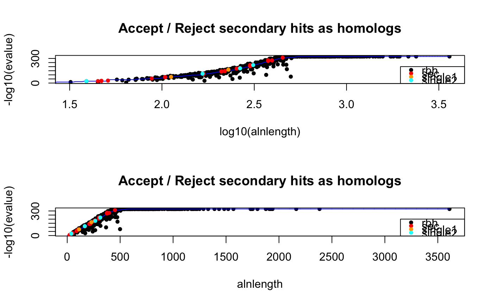
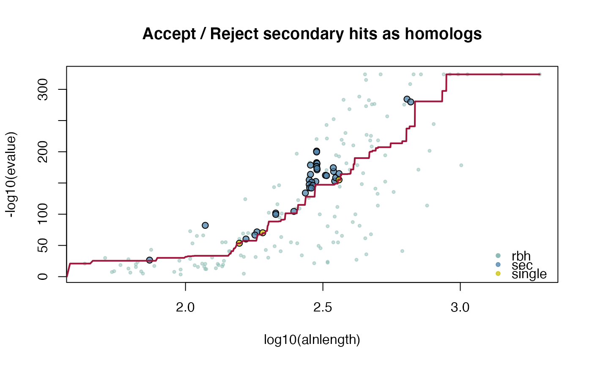

This function calculates (conditional-)reciprocal best hit pair matrix from two DNAStringSet's.
Conditional-reciprocal best hit pairs were introduced by Aubry S, Kelly S et al. (2014).
Sequence searches are performed with last Kiełbasa, SM et al. (2011).
If one specifies cds1 and cds2 as the same input a selfblast is conducted.
cds2rbh( cds1, cds2, lastpath = paste0(find.package("CRBHits"), "/extdata/last-1060/src/"), outpath = "/tmp", crbh = TRUE, keepSingleDirection = FALSE, evalue = 0.001, qcov = 0, tcov = 0, pident = 0, alnlen = 0, rost1999 = FALSE, filter = NULL, plotCurve = FALSE, fit.type = "mean", fit.varweight = 0.1, fit.min = 5, threads = 1, remove = TRUE )
| cds1 | cds1 sequences as |
|---|---|
| cds2 | cds2 sequences as |
| lastpath | specify the PATH to the last binaries [default: /extdata/last-1060/src/] |
| outpath | specify the output PATH [default: /tmp] |
| crbh | specify if conditional-reciprocal hit pairs should be retained as secondary hits [default: TRUE] |
| keepSingleDirection | specify if single direction secondary hit pairs should be retained [default: FALSE] |
| evalue | evalue [default: 1e-3] |
| qcov | query coverage [default: 0.0] |
| tcov | target coverage [default: 0.0] |
| pident | percent identity [default: 0.0] |
| alnlen | alignment length [default: 0.0] |
| rost1999 | specifiy if hit pairs should be filter by equation 2 of Rost 1999 [default: FALSE] |
| filter | specify additonal custom filters as list to be applied on hit pairs [default: NULL] |
| plotCurve | specify if crbh fitting curve should be plotted [default: FALSE] |
| fit.type | specify if mean or median should be used for fitting [default: mean] |
| fit.varweight | factor for fitting function to consider neighborhood [default: 0.1] |
| fit.min | specify minimum neighborhood alignment length [default: 5] |
| threads | number of parallel threads [default: 1] |
| remove | specify if last result files should be removed [default: TRUE] |
List of three (crbh = FALSE)
1: $rbh.pairs
2: $rbh1 matrix; query > target
3: $rbh2 matrix; target > query
List of four (crbh = TRUE)
1: $crbh.pairs
2: $crbh1 matrix; query > target
3: $crbh2 matrix; target > query
4: $rbh1_rbh2_fit; evalue fitting function
Aubry S, Kelly S et al. (2014) Deep Evolutionary Comparison of Gene Expression Identifies Parallel Recruitment of Trans-Factors in Two Independent Origins of C4 Photosynthesis. PLOS Genetics, 10(6) e1004365.
Kiełbasa, SM et al. (2011) Adaptive seeds tame genomic sequence comparison. Genome research, 21(3), 487-493.
Rost B. (1999). Twilight zone of protein sequence alignments. Protein Engineering, 12(2), 85-94.
##compile last-1060 within CRBHits make.last() ##load example sequence data data("ath", package="CRBHits") data("aly", package="CRBHits") #conditional-reciprocal best hits ath_aly_crbh <- cds2rbh(ath, aly, plotCurve = TRUE)#> [1] 798 2#> [1] 745 2#filter for evalue 1e-100 ath_aly_crbh.eval100 <- cds2rbh(ath, aly, evalue = 1e-100) dim(ath_aly_crbh.eval100$crbh.pairs)#> [1] 688 2#filter for query coverage ath_aly_crbh.qcov <- cds2rbh(ath, aly, qcov = 0.5) dim(ath_aly_crbh.qcov$crbh.pairs)#> [1] 776 2#custom filter for e.g. bit score (column 12) myfilter <- function(rbh, value = 500.0){ return(rbh[as.numeric(rbh[, 12]) >= value , , drop = FALSE]) } ath_aly_crbh.custom <- cds2rbh(ath, aly, filter = list(myfilter)) dim(ath_aly_crbh.custom$crbh.pairs)#> [1] 570 2#multiple filters can be given in filter param as list # #selfblast ath_selfblast_crbh <- cds2rbh(ath, ath, plotCurve = TRUE)